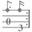
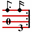
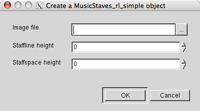
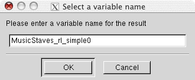

Last modified: October 27, 2015
This manual is for those, who want to use the toolkit for finding and removing stafflines, but are not interested in implementing their own staff removal algorithms.
Staff removal with this toolkit requires three steps (apart from importing the MusicStaves toolkit):
If you do not want to remove the staff lines, but only want to know their positions, you can perform the following steps:
All steps can be achieved both interactively from the gamera GUI or noninteractively from python scripts.
Before using the toolkit you must import it. This can be done from the "Toolkits" main menu entry. After the MusicStaves toolkit was imported the icon of the MusicStaves toolkit will appear in the icon window of the Gamera GUI.
There are three possible MusicStaves icons in the sidebar:
 Icon of the MusicStaves toolkit. It only indicates that the toolkit was successfully imported.  Icon of a MusicStaves object. This is bound to an image and offers staff removal functionality. Icon of a StaffFinder object. This is bound to an image and offers staff finding functionality without staff line removal.
There are two ways to create a MusicStaves or StaffFinder object:
- from the context menu of the grey musicstaves icon
- from the context menu of a onebit or greyscale image
Right-clicking the MusicStaves toolkit icon opens a menu containing all existing MusicStaves and StaffFinder classes. Each class represents a specific staff removal algorithm; see Classes for a detailed description. After selecting a class, the following dialog opens.
Leave the paramters Staffspace height and Staffline height zero unless you have computed them somehow beforehand. When left zero, they are computed automatically.
Next you are asked for a name for the MusicStaves object:
Eventually the MusicStaves object is created and appears as a colored icon in the sidebar on the left.
An alternative way to create a MusicStaves or StaffFinder object is to first load a onebit or greyscale image and then use the context menu of its icon. When the MusicStaves toolkit is loaded, a further menu entry is added to the plugin menu of a onebit and greyscale image: MusicStaves. All available MusicStaves classes are listed in its submenu classes.
Again a dialog will pop up asking for additional parameters. Leave them at their default values unless you know exactly what they mean.
Once a MusicStaves object has been created, the context menu of its icon offers the following entries:
Menu Entry Description Remove staves Removes staff lines according to the algorithm implemented in the particular class. For a parameter description in the popping up dialog see MusicStaves::remove_staves Display image Display the image. A double click on the icon does the same. Copy image Create a copy of the image belonging to the MusicStaves object. Info Shows staffline_height and staffspace_height and after staff removal also their positions
When the staff lines are removed you can query their position with the method get_staffpos from the python shell window.
Note
MusicStaves objects work on a copy of the original image. In particular the staff lines are not removed from the original image, but from the local copy.
Once a StaffFinder object has been created, the context menu of its icon offers the following entries:
Menu Entry Description Find staves Finds staff lines according to the algorithm implemented in the particular class. For a parameter description in the popping up dialog see StaffFinder::find_staves Show staves Shows the found staves colored in the image A double click on the icon does the same. Display image Display the image. Copy image Create a copy of the image belonging to the StaffFinder object. Info Shows staffline_height and staffspace_height and after staff finding also their positions
When the staff lines are found you can query their position with the methods get_average, get_polygon or get_skeleton from the python shell window.
Note
StaffFinder objects work on a copy of the original image. If the algorithm alters this image this changes will not be visible in the original image, but in the local copy.
The following code shows how staff lines are removed and how their position can be queried afterwards:
from gamera.core import *
from gamera.toolkits.musicstaves import musicstaves_rl_simple
init_gamera()
image = load_image("tablature.tif")
image = image.to_onebit()
ms = musicstaves_rl_simple.MusicStaves_rl_simple(image)
ms.remove_staves(crossing_symbols = 'bars')
staves = ms.get_staffpos()
for staff in staves:
print "Staff %d has %d staves:" % (staff.staffno, len(staff.yposlist))
for index, y in enumerate(staff.yposlist):
print " %d. line at y-position:" % (index+1), y
no_staves_img = ms.image.image_copy()
# alternative without copying: no_staves_img = ms.image
And here is a step by step explanation:
from gamera.core import *
from gamera.toolkits.musicstaves import musicstaves_rl_simple
init_gamera()
This imports the gamera core modules as well as the musicstaves_rl_simple module. Additionally it initializes gamera.
image = load_image("tablature.tif")
image = image.to_onebit()
ms = musicstaves_rl_simple.MusicStaves_rl_simple(image)
This initializes a MusicStaves_rl_simple object from the image file tablature.tif.
ms.remove_staves(crossing_symbols='bars', num_lines=5)
staves = ms.get_staffpos()
for staff in staves:
print "Staff %d has %d staves:" % (staff.staffno, staff.n_staves)
for index, y in enumerate(staff.yposlist):
print " %d. line at y-position:" % (index+1), y
This demonstrates how to remove staff lines and query their positions afterwards with a loop over the returned StaffObj.
no_staves_img = ms.image.image_copy()
The staff lines have not been removed from the original image, but from a local copy which is stored in the property image of the MusicStaves object. Thus it is copied back for further processing.
Finding staff lines without removal works similar, but you need to use a StaffFinder class rather than a MusicStaves class:
from gamera.core import *
from gamera.toolkits.musicstaves import stafffinder_miyao
init_gamera()
image = load_image("tablature.png")
image = image.to_onebit()
sf = stafffinder_miyao.StaffFinder_miyao(image)
sf.find_staves()
staves = sf.get_average()
for i, staff in enumerate(staves):
print "Staff %d has %d staves:" % (i+1, len(staff))
for j, line in enumerate(staff):
print " %d. line at y-position:" % (j+1), line.average_y
It is possible to use an arbitrary StaffFinder for staff removal by replacing the default stafffinfer in MusicStaves_linetracking with a different StaffFinderclass:
from gamera.core import *
from gamera.toolkits.musicstaves import stafffinder_stable_path
from gamera.toolkits.musicstaves import musicstaves_linetracking
init_gamera()
image = load_image("music.png")
image = image.to_onebit()
sf = stafffinder_stable_path.StaffFinder_stable_path(image)
sf.find_staves()
ms = musicstaves_linetracking.MusicStaves_linetracking(image)
ms.stafffinder = sf
ms.remove_staves()
image_without_staves = ms.image